Sending Out
Some Background
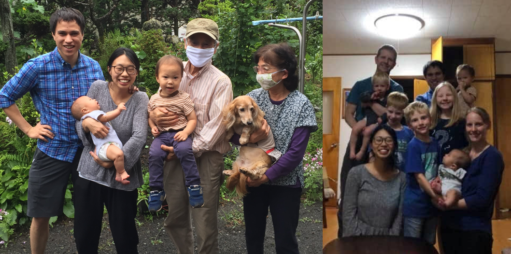 From our time in JapanAccording to our own plans and perspective, six months in Japan (followed by another six months in the States) was quite premature for us to have a sabbatical. At the time, we had only been on the field for one and a half years: long enough to start wrapping up language study and just barely be on the cusp of jumping into ministry, but not nearly long enough to really deeply get involved in anything. In many ways it would not have been the time I would have chosen to pull out of country for a full year.
Even so, in retrospect it was quite providential in how it came about and in the numerous ways God worked through it – indeed, more ways than there is space to recount here (we would refer you to our previous posts for more). However, one thing in particular that was beneficial was that we were given the chance to have extended time to pray and meditate on certain biblical, systematic, and practical theological topics, including the Great Commission, God’s plan of salvation for the nations, applied missiology, and the specific situation of the Church in Cambodia. Upon returning to Cambodia in 2021, we were able to be more intentional with our ministry choices and direction with more clarity and conviction regarding how we can best be used here.
In particular, one long-term goal came out of this time: for the Cambodian church to grow more and more in maturity and grace, to the point where they are not just concerned for their own churches and spiritual well-being (an important first step to be sure), but that they would seek to themselves go out to all the nations and make disciples (Matt 28:19-20).
Key Motivating Factor: Disciples Make Disciples
In a sense, the idea of Cambodians going out and reaching especially their neighboring countries (Thailand, Vietnam, etc) was always in our purview since we first set our sights on Cambodia. It was one of the things that originally brought us here - the strategic location and religious freedom that opens up incredible possibilities for Cambodian churches to have a part in making disciples in places and among nations that are extremely difficult for Westerners to enter.
To be fair, these places would also be challenging for Cambodians to do ministry in as well. There would be significant sacrifice for anyone to go and do ministry in many of these places. The key however, for all of us who have significant opportunity for the Kingdom but are faced with the question of whether the sacrifice is worth the reward (if you feel like I’m talking to you…then maybe I am) is to “catch the vision”.
Catch what Vision?
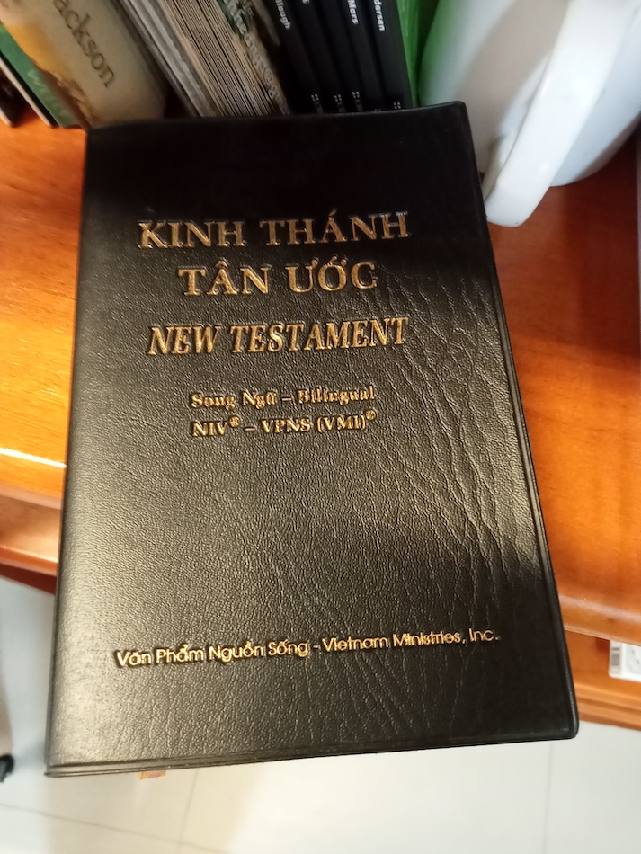 A Vietnamese New TestamentNote that first and foremost, I am not referring to the “vision” of ministry potential (though again, this is not to be despised either), as in that we must “cast a vision” or something like that. Rather, our primary need as Christians, which will spur us on to join in Christ’s Great Commission work that He has given the church, despite any suffering or sacrifice that we might encounter along the way is a vision of Christ. Some have referred to this as the “beautific vision” - to behold God in Christ. “The Son who was face to face with the Father has now become face to face with us. So, we see in the Son’s face the reflection of the beauty, glory, and marvel of God’s being.”
Perhaps you have heard the catchphrase “Disciples make disciples”. There is a danger in letting this become just a meaningless cliche, but when viewed in its theological context, there is actually quite a profound message in this statement, especially when viewed within the context of the Great Commission, as it usually is. When we, as disciples of Christ, behold God in the face of Christ, we will in turn naturally desire to lead others to Christ as well.
Why is this the case? There are a few reasons for this. First of all, undoubtedly this is in part because, having received joy and hope and every spiritual blessing in Him, our hearts will naturally overflow in love for our fellow man, and desire the same for them.
Secondly, beholding Him, we will become like Him (2 Cor 3:18; 1 John 3:2-3) - this too will make us passionate for that which He is passionate about, prioritize what He prioritizes, and lay down our lives for that which He has already laid down His life.
Even beyond that though, consider also how Matthew 28:18 is setup as the foundation for Matthew 28:19-20. Before commissioning the church to “go and make disciples”, Christ first announces the central theological truth undergirding this commission: His supreme authority that has been granted Him from the Father (28:18; cf. Dan 7:14). He has authority over all the nations, therefore we must make disciples in all the nations as well.
Why this shapes our missiology: A healthy church is a sending church.
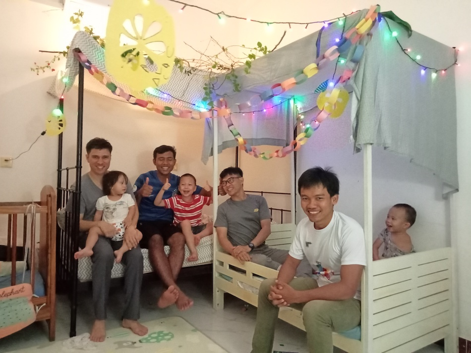 Celebrating Feast of Booths with Ryan’s small groupBringing things back full-circle: as a part of the Church, we are called to make disciples. For us personally, it is making disciples here in Cambodia - and that means, teaching them to obey all that Christ commanded, yes, including the command to make disciples.
In other words, for us to be successful in the disciple making process, our goal must be to move the Church towards embracing their Christ-commissioned role in turning around and themselves making disciples - and this, not just making disciples in their own neighborhood, but in all the nations. If the disciples that we “make” are disciples indeed, they too will turn around and make disciples in all the nations as well.
Meditating on these things first of all made us that much more excited to be part of Christ’s Commission for His Church, but second of all, brought us to see more clearly the need for the Cambodian Church to look outward beyond their own borders and ethnic boundaries to the countries that surround them as well as the nations that live within Cambodia itself. For the Cambodian Church to be healthy (which is really at the heart of our work here in Cambodia), it needs to take part in the Great Commission. It needs to obey all that Christ has commanded, including the command to make disciples in all the nations.
So, while we most certainly are passionate about seeing men and women from the nations surrounding Cambodia brought to a saving knowledge of our Lord Jesus Christ for their sake and beyond that for the glory it brings to Him, we are also very much driven by our desire in seeing the Church here in Cambodia take part in it as well.
Perhaps this is not too unlike Paul, who before going to Spain writes a letter to the Church in Rome, not just explaining his intention, but also explaining gospel and implications of it, to bring this church whom he loves and whose spiritual well-being he cares deeply about to be overcome for a love for the nations themselves and seek to join Paul in his labor for the nations (Rom 15:22-33). Paul didn’t just want to go, he wanted them to participate.
We see the same picture in Philippians - Paul didn’t need their contribution towards his cause in order to carry out the work that Christ had appointed him towards. But he did deeply desire for them to join in his work. He wanted their help, not for his sake or even for the sake of his gospel work (as if God needed our giving to carry out His work), but rather for the sake of the Philippian church, that they would have an opportunity to join in as well (Phil 4:10-20).
What we’ve been up to
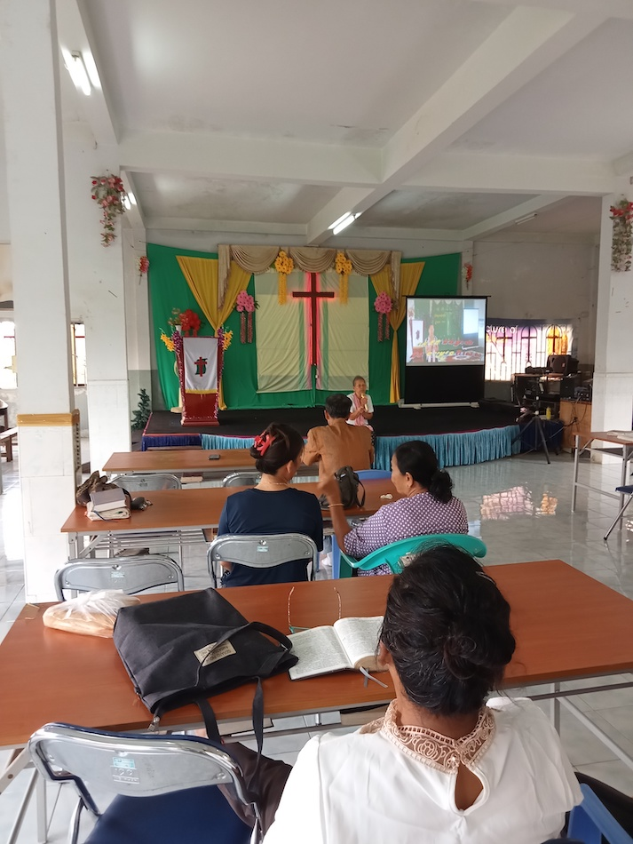 Visiting a student’s church This has been an admittedly lengthy introduction to some of what we’ve been up to these last few months. But all of this to say, we have been very encouraged and excited by signs that the Holy Spirit has indeed been placing on this burden more and more evidently on the hearts of Cambodian believers, as well as grateful to God that He gives us opportunities to join in ourselves.
Trip to ethnic minority village
Last year when I taught the global missions class at PPBS I invited a missionary in our extended network to come and share about the work that he’s doing in the outskirts of Phnom Penh with an ethnic minority.
You might remember that we requested prayer that the Holy Spirit would work through this guest speaker in the hearts of the students, that they would see the need and responsibility that the Cambodian church has to reach this ethnic minority for Christ (see this post). To be honest, I must confess that I myself had forgotten, to my shame! But now, half a year after the prayer request, we saw the fruit of it. God worked through your prayers, and one of the students went with us to visit their village last month.
To give more context, this particular ethnic minority is nearly totally unreached. Cambodian Christians, when the topic is brought up, will nearly universally tell you that this people group is very hard to reach, and wouldn’t have any interest in sharing the gospel with them or doing ministry in their villages. Part of this is undoubtedly influenced by racial tensions that exist in the society as a whole, which have not been totally overcome even within the church. Perhaps we can draw an analogy to the relationship between Judeans and Samaritans in the time of Christ.
We are all that much more grateful than for the interest of the student to go with us to their village. It was his first time entering the house of someone from this ethnic minority. Perhaps the biggest take away was that it was just normal. They are just people. They welcomed us, we ate food together - they are made in God’s image like the rest of us, broken by sin like the rest of us, and need Christ like the rest of us too.
I’m hoping this missionary will come again and visit the missions class in the next few weeks.
Please continue to pray for similar opportunities and for God to continue to work in the hearts and minds of the Cambodian church to reach their neighbors! (If you’re wondering who I’m referring to as their “neighbors”…then you’re asking the right question cf. Luke 10)
Vietnamese Church
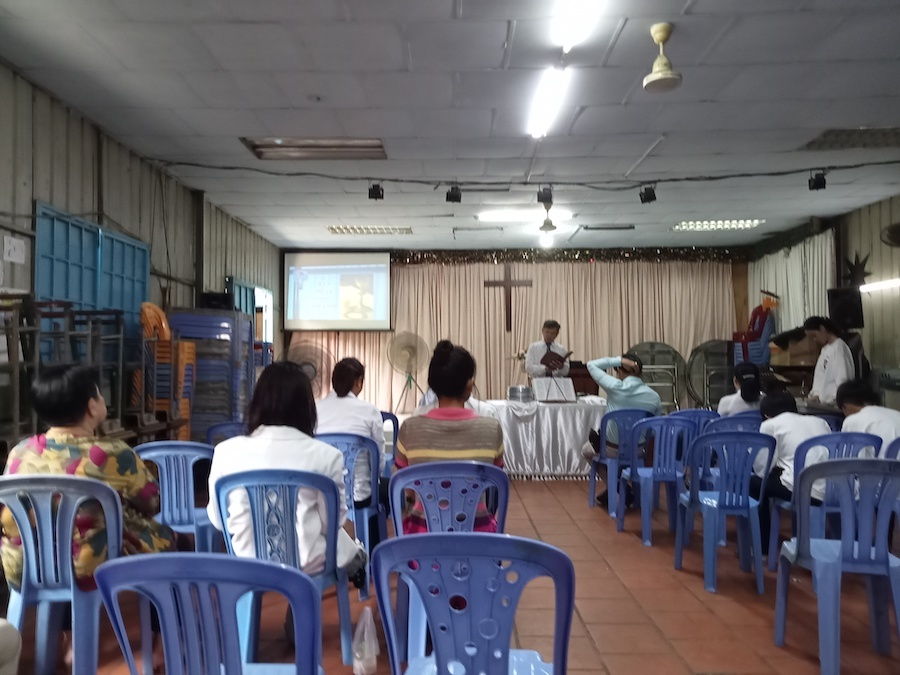 Sharing in communion at the Vietnamese church In our last update, we briefly mentioned our visit to a Vietnamese church here in Phnom Penh. If there is racial tension between the Vietnamese and Cambodians, then there is outright animosity between Vietnamese and Cambodians, mostly for historical reasons. Especially among older Cambodians, racial slurs towards the Vietnamese are quite common, even within the church.
I had an opportunity to visit this church again. This time, differently from last time, one of the brothers helped to translated from Vietnamese to Khmer during the sermon and announcements. One of the announcements in particular caught my attention: there are a number of the enemies pastors in the area who meet together once a month or so to talk about ministry. They decided that among their different churches, they need to be more intentional about going on youth retreats, church retreats and so on as churches. What struck me most about this was one of the main reasons they gave: so that, as they go out into different parts of the country for these retreats, that basically they would have an opportunity to rub shoulders with Khmer churches. They wanted Khmer churches to realize that they are just regular churches like them, know that they weren’t doing anything out of order, and basically, that they were a part of the body of Christ like any other church.
They have fellowship lunches every week, and this time around I was able to join. The pastor speaks Khmer, but it was very limited. However, one of the brothers there helped to translate as we talked around the lunch table. I asked them about what they thought of cooperating with Cambodian churches in being involved in church activities, letting their youth participate in Cambodian youth church events or sports ministries, or even sending their young men and women to the Phnom Penh Bible School. However, the pastor was reluctant. Part of the challenge is language - many of the Church members (especially the younger generation) are very fluent in Khmer, but the senior pastor himself is not.
My friend who originally introduced just the church explained further. Past interactions between Khmer and Vietnamese churches brought out the fact that there is still racism. It is better now than it was before, but it is an ever present barrier.
It was striking to consider all of this in light of the Communion bread and wine that we shared together that day. On the one hand, I was overwhelmed by joy just thinking about what was happening at that very moment: I was here in Cambodia as an American introduced to this Church by a Korean missionary enjoying the Lord’s Supper, officiated in Vietnamese. What better way to remember our union with Christ as part of His body, a redemption bought through His body and blood, that first reconciles us to Himself and thereby reconciles us to each other. There are no words.
On the other hand, the ever present division that remains is all that much more tragic. Very much an “already, but not yet” reality that we live with.
Please pray for continued growth in this regard, most of all within the Vietnamese and Cambodian churches themselves, but also as God allows that we could have some part in bridging the gap.
We also found out one of the church members has a family around our age and lives just down the street from PPBS. Pray for gospel opportunities with their family as well - not to share the gospel per se, but to live out the trans-cultural unity of the gospel which brings us all together in Christ.
Missions to Nearby Country
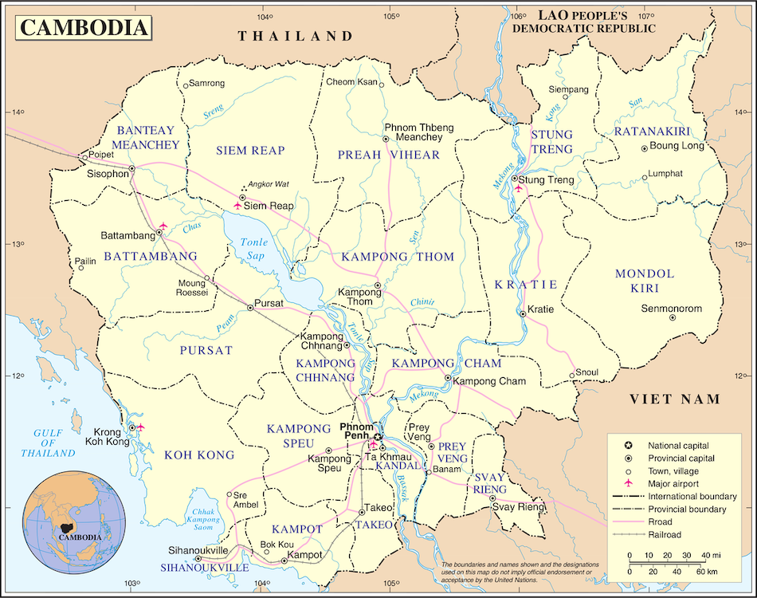 In the last several months we have been able to get to know a Khmer pastor here, Pastor Abraham*. Lord willing, he will be launching out to a nearby country in SE Asia in the next couple months. We met him through one of the students at PPBS that we are close with. (Due to the sensitivity of where he is going, we are not disclosing the exact country)
He actually was a missionary in this country for several years before COVID, but came back to Cambodia in 2020. This is not precisely our ideal picture of Cambodians sending out missionaries, since in actuality he is supported primarily by Filipino churches (he studied at a Bible school in the Philippines in the past). There is still much growth and progress in grace needed on the part of Cambodian churches before they are fully sending out missionaries of their. At the same time, it is very much an encouraging first step, as more and more individual believers in the Khmer church are seeing the necessity for having more of a part in Great Commission work.
Additionally, this too is quite an encouraging picture for a separate reason, well-worth giving some time to consider: American missionaries went to the Philippines and planted churches there, who themselves sent out Filipino missionaries to plant churches in Cambodia. As God prepared gifted and qualified men within the Cambodian church, they were sent for training in the Philippines and from within their midst, some were approved and sent on by the Filipino Church as Cambodian Missionaries to work in other SE Asian countries.
It is truly amazing to consider at what God is doing around the world, as He builds His church.
Missions conference
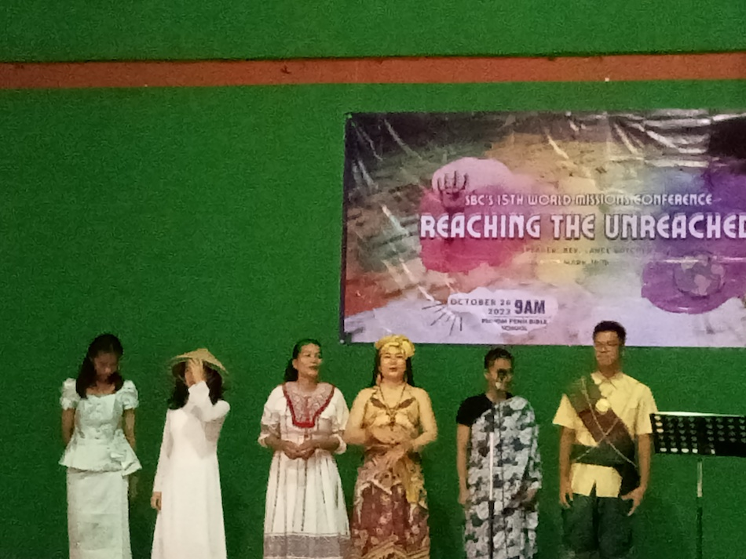 At a missions conference hosted at the Bible schoolThe first Cambodian that this particular group of Filipino Churches sent out was Pastor Abraham, whom Ryan will be traveling with on the 21st. However, others are being trained and sent out as well.
The Filipino Baptist association put on a Missions Conference using the PPBS facilities at the end of October, where we learned about more of their work around SE Asia and even in Africa. Several students from the missions class that I’m teaching this semester also attended (I gave extra credit haha).
Please pray with us for the Filipino Church to excel still more in this regard, as well as for the Cambodian church that they would see the importance of faithfulness to Christ in this most important work as well.
Nearby SE Asian Country -> Border Province -> Banlung
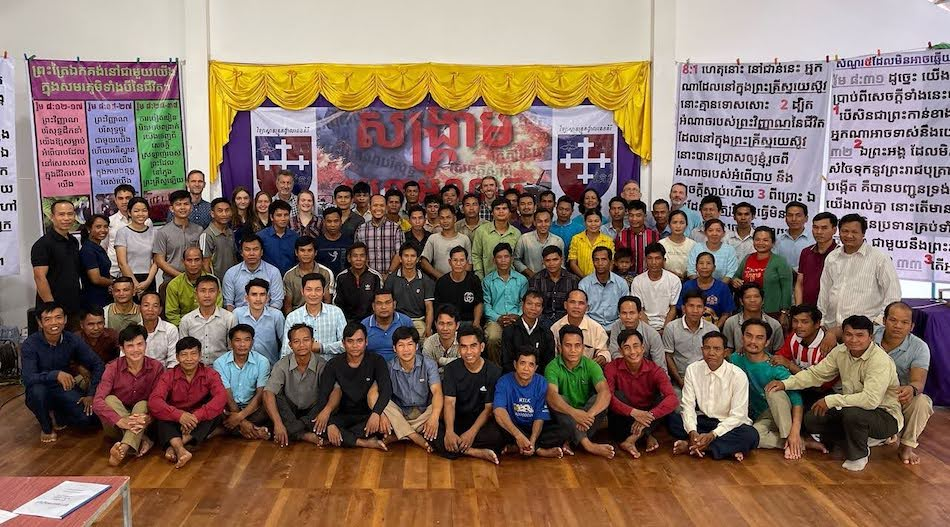 Last year at the pastor’s school in Ratanakiri Our plan is to leave Phnom Penh on the 21st and then come back to Cambodia on the 25th or so. While there we will visit the city where Pastor Abraham plans on working briefly before heading back.
Then Pastor Abraham will go back on his own to Phnom Penh, and Sok* (the Bible school student who is joining us) and I will stay the night just across on the Cambodian side of the border for a night. There we plan to spend some time with one of the missionaries there who works with the same people group, but who live in Cambodia. Because of discrimination against by Cambodians, this people group they often hide their identity and try to assimilate into Khmer culture.
From there we will make our way to Banlung City, where our teaching is. This is the town where Rebekah and I plan to move in about a year and a half. The teaching will be similar to what we did last year, but this time I’m going with my student instead of my family.
Please pray for all parts of this trip as well, that it would bring glory to God and be used to edify His church. Please pray also for Rebekah at home with the kids.
Prayer Requests
Besides the above prayer requests, please pray also for the following situations:
- We are continuing to confirm plans to work with them starting early 2025 as well as other logistical/ministry details. Thank you for your continued prayer for this developing partnership for the gospel.
- Thanksgiving for the safe delivery of our fourth baby, Taliah Elizabeth. Praise God for this gift, but also prayer for energy for Rebekah (especially with wanting to be faithful to ministry opportunities and training up our first three kids in the meantime).
- One concern has been seeing some indications of a lack of clarity in regard to some key gospel truths in students’ lives. Of course, all of us need these reminders about fundamental gospel realities - but just to say, pray for more opportunities to point students back to the gospel.
- Pray for Shalom Phnom Penh Church, as the church transitions after Pastor Chanthea steps down to go back to school.
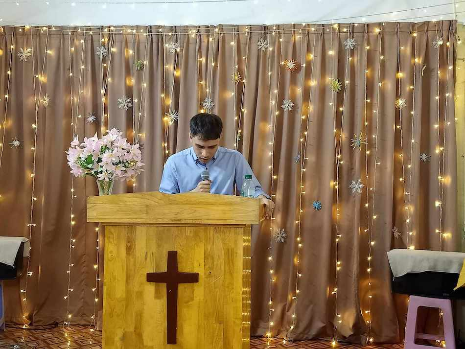 At a sister church 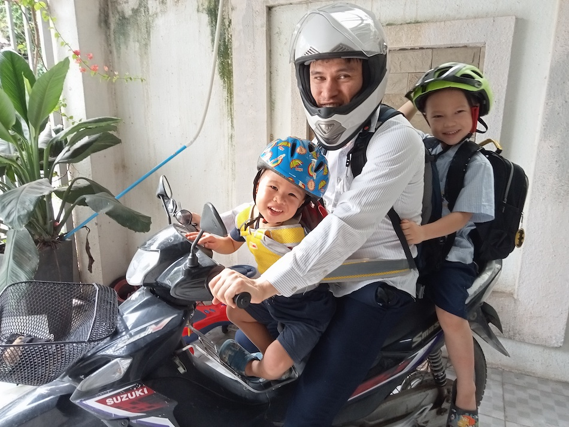 Taking the boys to school Sports ministry 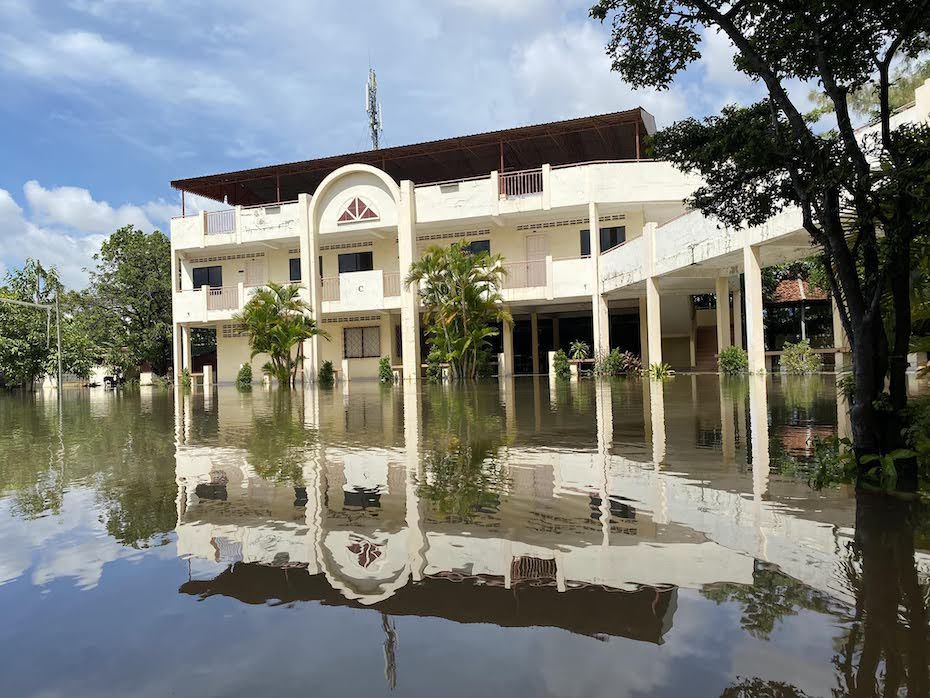 Rainy season at the Bible school
For His glory,
Ryan and Rebekah
* Name changed for privacy reasons.